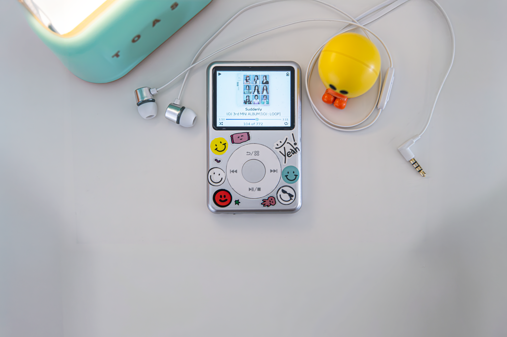
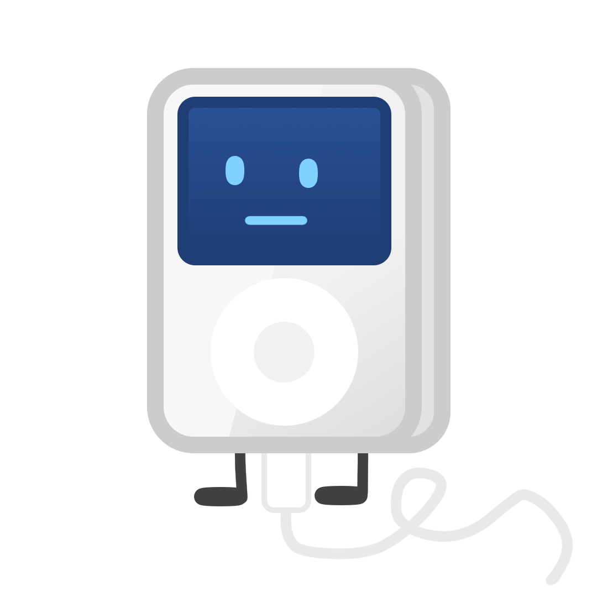
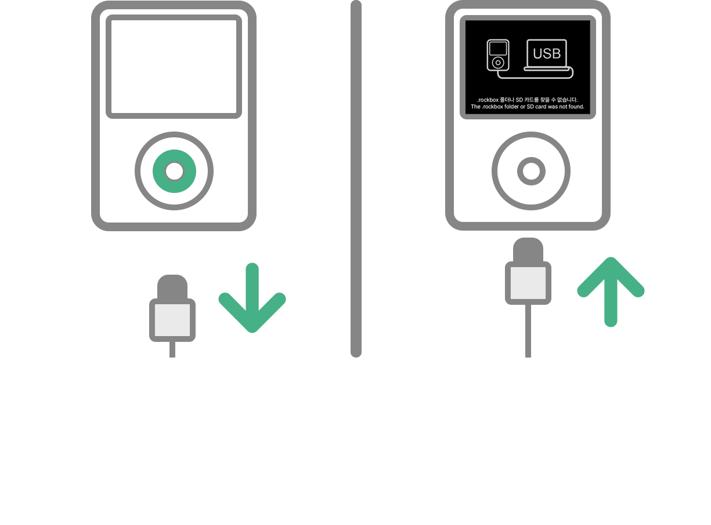
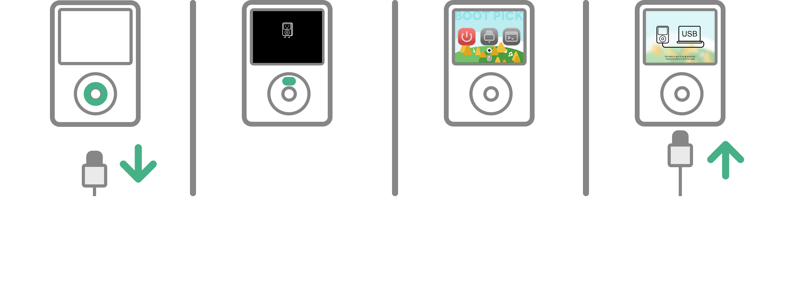
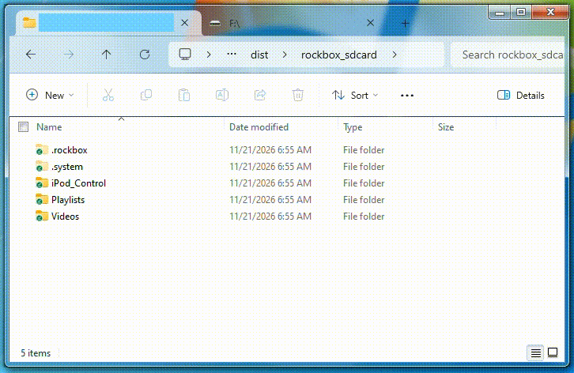

Welcome to Nugget for Y1
Please read the steps below to finalize the installation.
Download files required
You will need to download files to proceed with next steps.

Download ZIP file on GitHub
Download 'rockbox_sdcard.zip' in the latest release.
Extract the ZIP file
Once extracted, you should see a '.rockbox' and '.system' folder.*
*Press Cmd + Shift + Period to see hidden folders
I am new, enter the device in USB mode
To copy files over initally, you will need to do this. Do not see this screen? You are updating, scroll down
Turn it on after flashing
Press and hold the center button
Plug it in
Once this is displayed on screen, you may insert USB.

I am updating from an earlier version of Nugget, enter the device in USB mode
To copy files over initally, you will need to do this. Skip this if you did the previous step (Step 2.A)
Turn it on after flashing
Press and hold the center button
Rapidly press MENU after powering on + see black logo
This will open Configapp.
Enable USB mass storage mode
You may need to scroll all the way to the end
Plug it in
Once this is displayed on screen, you may insert USB.

Put the extracted rockbox_sdcard files on the Y1
You may need to manually shut the device down in order to boot.
Copy the extracted folders
.rockbox, .system and any others
Paste them in the root of the Y1
Replace files if requested
Eject
You should eject after every time you plug it into a computer.

Install themes in Rockbox
You can install both iPod 240p classic themes in Rockbox.
Go to Rockbox Themes Website and download a theme
This is for iPod 240p themes.
Extract the files and put .rockbox in your Y1
Merge if it asks you, replace files.
Eject
You should eject after every time you plug it into a computer.
Enable Classic mode
Settings -> General Settings -> Nugget -> Device -> Screen Resolution -> Classic
Apply theme
Settings -> Themes -> Browse Theme Files. For some themes, disabling "Dynamic Colors" is required.